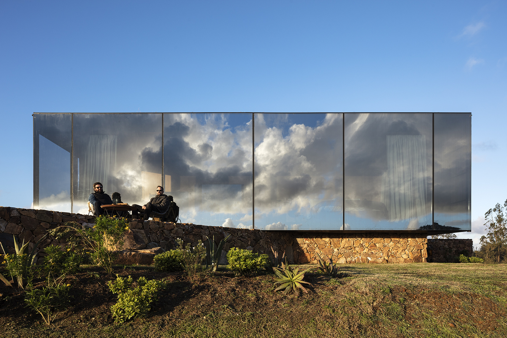

Spaces
That Inspire
If is there any list of the most important architecture projects of 2018 will definetely feature an abundance of superlatives.
Nation’s Top in Design and Architecture
Design excellence adds real value to what we build—not just in terms of buildings’ visual appeal but in their urban design, functionality as workplaces, and overall sustainability. We support the delivery of vital public services to the American people with buildings that are distinct and valued landmarks in their local communities
Rehabilitation Institute of Chicago’s Shirley Ryan AbilityLab, First-Ever “Translational” Research Hospital, Opens Doors
One Of The Most Beautiful Buildings In The World
Comprising a series of overlapping fluid surfaces, the building was designed by Zaha Hadid Architects as the main venue for exhibitions, concerts and other cultural activities in Azerbaijan's capital city.
Two Manifolds / Nuno Pimenta
more
Sacromonte Landscape Hotel Shelters / MAPA
more
Hug & Link / Edam Architecture Design Group
more
Your local travel guide
Small and mid-size companies often have trouble finding suitable office space in Amsterdam. The creative industry has seemingly unrealistic demands when it comes to office locations: an incubator of ideas, which is spacious and inspiring, with a unique design at a great location with car access. Salt is a response to these needs, providing small, high quality offices, each with a unique identity.
Photographs Ossip Van Duivenbode
Photography Estudiograma
All Projects
Events
Articles
Interviews
30 world-famous buildings to inspire
Anyone with a creative bone in their body cannot fail to be inspired by famous buildings. Outstanding architecture, stunning location and clever use of materials all contribute to what makes famous buildings such influences on creativity – and that's before you throw history and purpose into the mix.